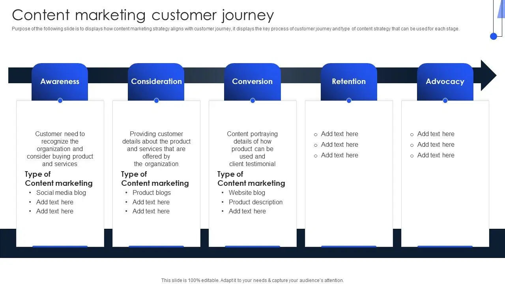

üìà Day 2 - Topic 4: Advanced Siebel Features
üéØ Module Overview
Welcome to Day 2! Today we explore advanced Siebel CRM features that power enterprise operations. This module covers sophisticated functionality for sales, marketing, service, and integration.
What You'll Learn:
Sales Excellence
- Pipeline Management
- Opportunity Tracking
- Forecasting & Quotas
- Territory Management
Marketing & Service
- Campaign Management
- Lead Generation
- Service Level Agreements
- Entitlement Management
Integration
- EAI Architecture
- Web Services
- ERP Integration
- Data Synchronization
Mobile & Modern UI
- Siebel Mobile
- Open UI Framework
- Responsive Design
- Offline Capabilities
üíº Sales Pipeline Management
Understanding the Sales Pipeline
The sales pipeline visualizes opportunities from initial contact through closed deals. Siebel provides comprehensive tools to track, analyze, and optimize your sales process.
Standard Pipeline Stages:
- Qualification (10%): Initial contact, needs assessment
- Needs Analysis (25%): Detailed requirements gathering
- Proposal (50%): Solution presentation, pricing
- Negotiation (75%): Terms discussion, contract review
- Closed Won (100%): Deal finalized
- Closed Lost (0%): Opportunity lost to competitor or no decision
Key Pipeline Metrics
Velocity: Average time opportunities spend in each stage
Conversion Rate: Percentage advancing from one stage to next
Pipeline Value: Total weighted value of all open opportunities
Win Rate: Percentage of opportunities closed as won
üéØ Opportunity Management
Creating and Managing Opportunities
Opportunities represent potential sales. Each opportunity tracks products, revenue, timeline, competitors, and probability of success.
Opportunity Fields
• Name: Descriptive title (e.g., "MegaCorp 5G Enterprise Network")
• Account: Associated customer account
• Contact: Primary decision maker
• Owner: Sales representative responsible
• Sales Stage: Current position in pipeline
• Probability: Likelihood of closing (auto-calculated by stage)
• Revenue: Expected deal value
• Close Date: Target closing date
• Type: New Business, Renewal, Upsell, Cross-sell
• Sales Method: Methodology used (e.g., Solution Selling)
Best Practices
- Creating opportunities too early (before qualification)
- Not updating close dates regularly
- Leaving opportunities in late stages too long
- Inflating revenue projections
- Update opportunities weekly at minimum
- Use Activities to track all customer interactions
- Document reasons for stage progression
- Involve sales managers in large deals early
üì¶ Products and Revenue Management
Adding Products to Opportunities
Opportunities can contain multiple products, each with its own quantity, price, and discount structure.
Product Configuration
Product Hierarchy:
- Product Line: High-level category (e.g., Mobile Services)
- Product: Specific offering (e.g., 5G Business Plan)
- Product Defect: SKU or variant (e.g., 5G-BUS-100GB)
Revenue Calculation
List Price × Quantity = Subtotal
Subtotal - (Subtotal × Discount %) = Net Amount
Net Amount + Tax = Total Revenue
Example:
Product: 5G Business Plan
List Price: $500/month
Quantity: 100 lines
Subtotal: $50,000/month
Discount: 15%
Net: $42,500/month
Annual Contract: $510,000
Revenue Types in eCommunications
- MRC (Monthly Recurring Charges): Subscription fees
- NRC (Non-Recurring Charges): One-time setup fees
- Usage Charges: Consumption-based billing
- Overage Charges: Exceeding plan limits
üìä Sales Forecasting
Forecast Management
Siebel's forecasting engine aggregates opportunity data to predict future revenue. Forecasts roll up through organizational hierarchies and can be adjusted by managers.
Forecast Categories
Pipeline: All open opportunities (weighted by probability)
Best Case: All opportunities you might win
Commit: Opportunities you're confident will close
Closed: Deals already won this period
Forecast Submission Process
- Rep Reviews: Sales rep reviews their opportunities
- Rep Submits: Rep submits forecast to manager
- Manager Adjusts: Manager can override rep's numbers
- Manager Submits: Manager submits to director
- Rollup Continues: Process continues up hierarchy
- Executive Review: Senior leadership reviews final forecast
üéØ Quota Management
Setting Sales Quotas
Quotas define revenue targets for sales teams and individuals. Siebel tracks performance against quota in real-time.
Quota Types
Revenue Quota
Total dollar amount to be sold
Example: $2M annually
Unit Quota
Number of products/licenses sold
Example: 500 mobile lines
Quota Allocation
Company Quota: $100M
├── Region North: $40M
│ ├── Territory A: $15M
│ │ ├── Rep 1: $5M
│ │ ├── Rep 2: $5M
│ │ └── Rep 3: $5M
│ └── Territory B: $25M
└── Region South: $60M
Quota Attainment Tracking
Attainment %: (Actual Revenue ÷ Quota) × 100
Example: Rep closed $4.5M against $5M quota = 90% attainment
- <80%: Base salary only
- 80-100%: Base + prorated commission
- 100-120%: Base + full commission
- >120%: Base + commission + accelerators
üó∫Ô∏è Territory Management
Defining Sales Territories
Territories organize customers and prospects for sales coverage. Can be defined by geography, industry, company size, or product line.
Territory Assignment Rules
Geographic: Accounts in specific regions/postal codes
Industry Vertical: Accounts in specific industries (Healthcare, Finance, etc.)
Account Size: Enterprise (>1000 employees), Mid-Market (100-1000), SMB (<100)
Product-Based: Specialists for specific product lines
Named Accounts: Dedicated reps for strategic customers
Territory Alignment
Proper territory design ensures:
- Balance: Equal opportunity across territories
- Coverage: No accounts left unassigned
- Clarity: Clear ownership, no disputes
- Efficiency: Minimize travel time and costs
- First to create opportunity owns it
- Split credit between reps
- Manager adjudicates disputes
üì¢ Marketing Campaign Management
Campaign Overview
Marketing campaigns are coordinated efforts to promote products/services. Siebel tracks campaigns from planning through execution to ROI analysis.
Campaign Structure
Campaign Program (Year-long initiative)
└── Campaign (Specific promotion)
└── Wave (Execution batch)
└── Target List (Recipients)
└── Campaign Contact (Individual)
Campaign Types
Outbound
- Email Marketing
- Direct Mail
- Telemarketing
- Events/Webinars
Inbound
- Web Forms
- Trade Shows
- Partner Referrals
- Content Downloads
Campaign Workflow
- Planning: Define objectives, budget, timeline
- Segmentation: Identify target audience
- Creative: Develop messaging and assets
- Execution: Send communications
- Response Tracking: Monitor opens, clicks, conversions
- Lead Routing: Assign leads to sales
- Analysis: Calculate ROI and effectiveness
üéØ Lead Generation and Management
Lead Lifecycle
Leads represent potential customers who have shown interest but are not yet qualified as sales opportunities.
Lead Stages
- New: Lead just created, not yet contacted
- Contacted: Initial outreach attempted
- Qualified: Meets BANT criteria (Budget, Authority, Need, Timeline)
- Converted: Promoted to Account/Contact/Opportunity
- Disqualified: Does not meet criteria
- Nurture: Not ready now, keep warm for future
Lead Scoring
Assign points based on lead characteristics to prioritize follow-up:
• Company Size: Enterprise (+30), Mid-Market (+20), SMB (+10)
• Industry: Target verticals (+25), Others (+5)
• Title: C-Level (+30), VP (+20), Director (+15), Manager (+10)
Behavioral Scoring:
• Downloaded Whitepaper (+10)
• Attended Webinar (+15)
• Visited Pricing Page (+25)
• Requested Demo (+40)
• Multiple Website Visits (+5 each)
Hot Lead: Score > 75
Warm Lead: Score 50-75
Cold Lead: Score < 50
Lead Assignment
Round Robin: Distribute leads evenly across team
Territory-Based: Route by geography or account rules
Skill-Based: Match lead needs to rep expertise
Load Balancing: Assign to rep with fewest active leads
üå± Lead Nurturing Programs
What is Lead Nurturing?
Lead nurturing is the process of developing relationships with leads who aren't ready to buy yet. Automated email sequences keep your company top-of-mind until they're ready.
Nurture Campaign Example: New Mobile Technology
Week 2: Case study - How Company X improved with 5G
Week 3: Webinar invitation: 5G for Business
Week 4: ROI Calculator tool
Week 6: Competitive comparison guide
Week 8: Limited-time offer or demo invitation
Nurture Best Practices
- Provide Value: Educational content, not sales pitches
- Segment Appropriately: Different content for different industries/roles
- Timing Matters: Space emails appropriately (weekly or bi-weekly)
- Track Engagement: Monitor opens, clicks to identify hot leads
- Make Unsubscribe Easy: Maintain list health and compliance
Re-engagement Triggers
Automatically alert sales when nurture lead takes action:
- Opens 3+ emails in one week
- Clicks on pricing page
- Downloads multiple resources
- Revisits website multiple times
- Changes job title or company
üõ†Ô∏è Service Operations Management
Service Request Lifecycle
Service requests (SRs) are the core of customer service operations. They track issues from initial report through resolution.
SR Workflow Stages
- Open: Customer reports issue via phone, email, web, or chat
- Assigned: Routed to appropriate service agent/team
- In Progress: Agent actively working on resolution
- Pending Customer: Waiting for customer information
- Pending Vendor: Escalated to third party
- Resolved: Solution provided, awaiting confirmation
- Closed: Customer confirms resolution
SR Categories for eCommunications
Technical Issues
- No service/outage
- Slow data speeds
- Dropped calls
- Device malfunction
Account Services
- Billing inquiries
- Plan changes
- Account updates
- Payment issues
Multi-Channel Support
Modern service organizations support customers across multiple channels:
- Phone: Traditional call center with IVR routing
- Email: Auto-create SRs from support mailbox
- Web Self-Service: Customer portal for creating/tracking SRs
- Chat: Real-time messaging with agents
- Social Media: Twitter/Facebook integration
- Mobile App: Submit issues from smartphone
⏱️ Service Level Agreement (SLA) Management
What are SLAs?
SLAs define contractual commitments for service response and resolution times. Siebel automatically tracks SLA compliance and escalates overdue items.

SLA Metrics
• Priority 1 (Critical): 15 minutes
• Priority 2 (High): 1 hour
• Priority 3 (Medium): 4 hours
• Priority 4 (Low): 24 hours
Resolution Time SLA: How quickly issue must be resolved
• Priority 1: 4 hours
• Priority 2: 24 hours
• Priority 3: 3 days
• Priority 4: 5 days
SLA Components
Agreement: High-level contract with customer
Objective: Specific metric to track (response time, resolution time)
Target: Goal value (e.g., 95% within SLA)
Threshold: Acceptable range before penalties
Breach: SLA violation requiring remediation
SLA Clock Management
Business Hours: SLA clock runs only during business hours (e.g., 8AM-6PM weekdays)
24/7 Support: Clock runs continuously for critical services
Pause Conditions: Clock stops when waiting for customer response
Escalation: Automated escalation when 75% of SLA time elapsed
SLA Reporting
Track SLA performance with metrics:
- Compliance %: (Met SLA ÷ Total SRs) × 100
- Average Response Time: Across all priorities
- Average Resolution Time: From open to closed
- Breach Count: Number of SLA violations
- At Risk SRs: Currently open and nearing deadline
üé´ Entitlement Management
Understanding Entitlements
Entitlements define what services a customer is eligible to receive based on their contract or product purchase. They govern support levels, warranties, and service coverage.
Entitlement Types
Time-Based
Valid for specific duration
Example: 1-year warranty, 90-day support
Incident-Based
Limited number of uses
Example: 5 support calls included
Entitlement Validation
When customer contacts support, Siebel automatically checks:
- Is there an active entitlement for this product?
- Is the entitlement still within valid dates?
- Are there remaining incidents (if applicable)?
- Does customer's issue match covered services?
- Is customer in good standing (payments current)?
- Offer paid support incident ($250-$500 per case)
- Sell new support contract
- Escalate to sales for renewal
- Provide basic troubleshooting only
Service Tiers
• Email support only
• 5-day response time
• Business hours coverage
• Knowledge base access
Standard Support:
• Phone + email support
• 24-hour response time
• Extended hours coverage
• Community forums
Premium Support:
• 24/7 phone support
• 1-hour response for critical
• Dedicated support manager
• On-site support available
• Proactive monitoring
üöó Field Service Management
Dispatching Technicians
For telecommunications, field service handles installations, repairs, and equipment maintenance. Siebel optimizes technician scheduling and routing.
Service Appointment Workflow
- Request Created: Customer schedules installation or reports outage
- Skill Matching: System identifies qualified technicians
- Availability Check: Find open time slots
- Optimization: Minimize drive time, group nearby appointments
- Assignment: Dispatch to technician mobile device
- Execution: Technician arrives, performs work
- Completion: Update status, capture signature, close SR
Technician Skills
Match appointments to qualified technicians:
- Fiber Installation: Certified fiber technicians only
- Network Troubleshooting: Senior technicians
- Equipment Swap: Any field tech
- Business Installation: Commercial installation certification
Mobile Field Service
Technicians use mobile devices for:
- View daily schedule and navigate to appointments
- Access customer history and equipment details
- Update service request status in real-time
- Capture photos of installations
- Collect customer signatures
- Check inventory and order parts
- Submit timesheets
üîó Enterprise Application Integration
Why Integration Matters
Siebel CRM rarely operates in isolation. Modern enterprises integrate CRM with ERP, billing, provisioning, and other systems to create seamless processes.

Common Integration Scenarios
Order to Cash: Opportunity in Siebel → Order in ERP → Invoice in Billing → Payment Collection → Revenue Recognition
Service to Provisioning: Service Request in Siebel → Ticket in OSS → Provision in Network → Update Siebel
Marketing to Sales: Campaign in Marketing Automation → Lead in Siebel → Opportunity → Account in ERP
Integration Technologies
Real-Time
- Web Services (SOAP/REST)
- Business Services
- EAI Siebel Adapter
- Oracle Integration Cloud
Batch
- EIM (Data Import/Export)
- File-based interfaces
- Scheduled workflows
- Database links
üåê Web Services Integration
Siebel as a Service Provider
Siebel exposes business logic through web services, allowing external systems to create, query, and update CRM data.
Inbound Web Service Example
SOAP Request:
<CreateServiceRequest>
<Account>MegaCorp Industries</Account>
<Type>Technical Issue</Type>
<Description>Internet outage</Description>
<Priority>High</Priority>
</CreateServiceRequest>
Response:
<Response>
<SRNumber>SR-2025-12345</SRNumber>
<Status>Success</Status>
</Response>
Siebel as a Service Consumer
Siebel can call external web services to retrieve data or trigger actions in other systems.
Outbound Call from Siebel:
Business Service → External Web Service Endpoint
Request: Product SKU, Quantity
Response: Available (Yes/No), Lead Time, Price
Update Opportunity with availability info
REST APIs (IP 21.7+)
Modern REST APIs provide simpler integration:
GET /api/accounts/12345 - Retrieve account details
POST /api/opportunities - Create new opportunity
PATCH /api/serviceRequests/SR-789 - Update SR
DELETE /api/contacts/98765 - Delete contact
üíº ERP System Integration
CRM to ERP Data Flow
Critical data must flow between Siebel CRM and ERP systems like Oracle EBS, SAP, or NetSuite for unified operations.
Key Integration Points
Accounts: Master customer data shared between systems
Products: Catalog synchronized from ERP to CRM
Pricing: Real-time price lookups from ERP
Orders: Opportunities become sales orders in ERP
Inventory: Available-to-promise checks
Invoices: Billing data from ERP visible in CRM
Payments: Account status updates from ERP
Bi-Directional Sync
• New accounts created by sales
• Opportunities converted to quotes
• Quotes converted to orders
• Service requests requiring billing adjustments
ERP → CRM:
• Product catalog updates
• Pricing changes
• Order fulfillment status
• Invoice and payment information
• Credit hold notifications
Data Governance
Designate system of record for each data type:
- Accounts: CRM creates, ERP enriches with financial data
- Products: ERP is master, CRM is read-only
- Contacts: CRM is master
- Orders: CRM initiates, ERP owns after submission
üì± Siebel Mobile Architecture
Mobile CRM Overview
Siebel Mobile enables users to access CRM functionality from smartphones and tablets, with online and offline capabilities.

Mobile Deployment Options
Siebel Mobile (Disconnected)
Full offline capability with local database
- Download data to device
- Work without connectivity
- Synchronize when online
- Ideal for field service
Open UI (Connected)
Browser-based responsive interface
- Always online
- Real-time data
- No installation needed
- Ideal for office/remote workers
Mobile Use Cases
Sales Reps: Update opportunities on customer site, check inventory, send quotes
Field Technicians: View appointments, update service requests, capture signatures
Executives: Review dashboards, approve discounts, monitor pipeline
Service Agents: Respond to customer inquiries while away from desk
Offline Synchronization
For disconnected mobile:
- Download: User syncs before going offline (daily or as needed)
- Work Offline: Create/update records in local database
- Upload: When reconnected, changes sent to server
- Conflict Resolution: If same record modified online and offline, user resolves
üé® Open UI Framework
What is Open UI?
Open UI is Siebel's modern, responsive user interface framework introduced in IP 15. It replaces the legacy ActiveX controls with HTML5, CSS3, and JavaScript.
Open UI Benefits
- Browser Compatibility: Works in Chrome, Firefox, Safari, Edge - no plugins needed
- Responsive Design: Adapts to desktop, tablet, and phone screen sizes
- Modern UX: Contemporary look and feel
- Customizable: Easier to modify UI with CSS and JavaScript
- Better Performance: Faster page loads and interactions
- Accessibility: Improved support for screen readers and keyboard navigation
Customization Architecture
• Controls UI behavior
• Handles events
• Communicates with server
Physical Renderer (PR): HTML generation
• Creates DOM elements
• Defines layout
• Applies styling
Custom Files:
• /custom/scripts/ - Custom PM/PR JavaScript
• /custom/styles/ - Custom CSS
• /custom/images/ - Custom icons and graphics
UI Customization Examples
- Change color scheme to match corporate branding
- Add custom buttons with JavaScript actions
- Create new applet types (e.g., Kanban board)
- Integrate third-party JavaScript libraries (charts, maps)
- Build custom controls for specific data types
✅ Integration Best Practices
Design Principles
Loose Coupling: Systems should interact through well-defined interfaces, not direct database access
Error Handling: Gracefully handle timeouts, invalid data, and system unavailability
Logging: Comprehensive audit trail of all integration transactions
Monitoring: Real-time alerts for integration failures
Scalability: Design for growing data volumes and transaction rates
Performance Optimization
- Batch vs Real-Time: Use real-time only when necessary (e.g., pricing). Batch is more efficient for bulk data.
- Pagination: For large datasets, retrieve in chunks (e.g., 1000 records at a time)
- Caching: Cache frequently accessed reference data locally
- Asynchronous Processing: Don't make users wait for slow external calls
Security Considerations
- Authentication: Use OAuth 2.0 or API keys, never embed passwords in code
- Encryption: Always use HTTPS/TLS for web service calls
- Authorization: Validate user permissions before exposing data
- Input Validation: Sanitize all incoming data to prevent injection attacks
- Rate Limiting: Prevent abuse with API throttling
Testing Strategy
- Unit Testing: Test individual integration components in isolation
- Integration Testing: Test end-to-end flows between systems
- Performance Testing: Verify response times under load
- Failover Testing: Ensure graceful degradation when external system unavailable
- Data Validation: Confirm data accuracy after transformation
üéì Advanced Configuration Topics
Workflow Automation
Siebel Workflow automates business processes with visual drag-and-drop design. Common uses include approval routing, notification triggers, and data synchronization.
Workflow Components
Steps: Individual actions (Decision, Task, Business Service)
Connectors: Logic flow between steps
Siebel Operation: Create, update, query records
Business Service: Call custom logic
Wait Step: Pause for time or event
Example: Opportunity Approval Workflow
- Trigger: Sales rep changes opportunity stage to "Proposal"
- Decision: Is revenue > $50,000?
- If Yes: Create approval task for sales manager
- Wait: Until manager approves or rejects
- If Approved: Move stage to "Negotiation", send email to rep
- If Rejected: Move back to "Needs Analysis", notify rep with feedback
Runtime Events
Workflows can be triggered by:
- Record Created: New account, opportunity, SR
- Record Updated: Field value changes
- Record Deleted: Cleanup actions
- Scheduled: Daily/weekly/monthly batch processes
- Manual: User clicks button to start workflow
üìã Assignment Rules
Automated Record Assignment
Assignment Manager automatically routes records to appropriate owners based on configurable rules.
Assignment Criteria
Geographic: Assign based on customer address/zip code
Product-Based: Route to specialists for specific products
Skill-Based: Match to qualified resources
Load Balanced: Distribute evenly across team
Round Robin: Rotate assignments sequentially
Assignment Example: Service Requests
THEN Assign to: Network Operations Team
AND Escalate to: NOC Manager
IF SR Type = "Billing Question" AND Account Type = "Enterprise"
THEN Assign to: Enterprise Billing Specialist
IF SR Type = "Technical Support" AND Product = "5G Service"
THEN Assign to: 5G Support Team Member (Round Robin)
üîê Advanced Security
Multi-Layered Security Model
Siebel implements defense-in-depth with multiple security layers working together.
Security Layers
- Authentication: Verify user identity (LDAP, SSO, Database)
- Responsibility: Define what views/functions user can access
- Access Control: Row-level security (see only assigned records)
- Field-Level Security: Hide/show sensitive fields
- Audit Trail: Log all data changes
Visibility Rules
Organization: Users see only records in their organization
Position: Managers see their team's records
Personal: Users see only records they own
All: Unrestricted access (administrators only)
Data Privacy Compliance
- Implement "Right to be Forgotten" workflows
- Mask sensitive personal data (SSN, credit cards)
- Encrypt data at rest and in transit
- Maintain consent records
- Enable data export for customer requests
- Set retention policies and auto-delete old records
üìä Analytics and Insights
Embedded Analytics
Siebel provides built-in analytics dashboards with real-time metrics and charts.
Key Performance Indicators (KPIs)
Sales KPIs
- Pipeline value by stage
- Win rate percentage
- Average deal size
- Sales cycle length
- Quota attainment
Service KPIs
- First call resolution
- Average handle time
- SLA compliance rate
- Customer satisfaction
- Backlog by priority
Chart Types
- Bar/Column: Compare values across categories
- Line: Show trends over time
- Pie: Display proportional breakdown
- Gauge: Show progress toward target
- Funnel: Visualize conversion rates
üîÑ Business Process Automation
End-to-End Process Design
Link multiple workflows and business services to automate complex business processes spanning multiple departments.
Example: New Customer Onboarding
• Opportunity marked Closed-Won
• Trigger: Create account in ERP
• Create customer record in billing system
Step 2: Order Management
• Convert quote to order
• Reserve inventory
• Schedule installation
Step 3: Fulfillment
• Dispatch technician
• Provision service
• Activate in network
Step 4: Customer Success
• Send welcome email
• Create onboarding tasks
• Schedule follow-up call
• Assign customer success manager
üí° Industry-Specific Features
Communications-Specific Functionality
Siebel eCommunications includes pre-built features for telecom providers.
Catalog Management
- Service Plans: Voice, data, messaging packages
- Devices: Phones, tablets, hotspots
- Add-ons: International calling, hotspot data
- Bundles: Combined offerings (Triple Play)
Order Capture
New Service: New customer activation
Change of Service: Plan upgrade/downgrade
Disconnect: Service termination
Port-In: Transfer number from another carrier
Equipment Upgrade: New device with contract extension
Asset Management
Track physical and logical assets:
- Customer premise equipment (modems, routers)
- Network elements (cell towers, switches)
- Subscriptions and licenses
- SIM cards and phone numbers
üöÄ Performance Tuning
Query Optimization
Slow queries are the #1 performance issue. Follow these guidelines:
- Use Indexes: Ensure frequently searched fields have indexes
- Limit Results: Use filters to reduce record count
- Avoid Wildcards: "Smith%" is faster than "%Smith%"
- Denormalize When Needed: Copy critical data to avoid joins
- Use Search Specifications: Pre-filter data at BC level
Caching Strategies
Server Cache: Cache frequently accessed BCs
Browser Cache: Cache images, JavaScript, CSS
Named Search Cache: Cache common queries
Database Tuning
- Rebuild indexes regularly
- Update statistics weekly
- Archive old data
- Partition large tables
- Monitor slow query logs
üîß Troubleshooting Advanced Issues
Common Problems and Solutions
Problem: Workflow not triggering
Solutions:
- Check workflow policy conditions are met
- Verify runtime events are enabled
- Review workflow policy filter criteria
- Check user has permission to execute workflow
Problem: Integration timeout errors
Solutions:
- Increase timeout value in business service
- Optimize external service performance
- Implement asynchronous processing
- Add retry logic with exponential backoff
Problem: Mobile sync conflicts
Solutions:
- Configure conflict resolution rules (server wins/client wins)
- Reduce sync visibility to minimize conflicts
- Train users to sync more frequently
- Implement optimistic locking
üìà Scalability and High Availability
Horizontal Scaling
Add more servers to handle increased load:
Web Tier: Multiple web servers behind load balancer
Application Tier: Multiple Siebel servers in enterprise
Database Tier: Oracle RAC for database clustering
Load Balancing Strategies
Least Connections: Route to server with fewest active users
Session Affinity: Keep user on same server (sticky sessions)
Geographic: Route to nearest data center
Disaster Recovery
- Database Backup: Daily full + hourly incrementals
- File System Backup: Repository, custom files
- Standby Database: Real-time replication
- DR Site: Secondary data center for failover
- RTO/RPO Targets: Define acceptable downtime and data loss
üîí Advanced Administration
System Monitoring
Proactive monitoring prevents issues before users are impacted.
Key Metrics to Monitor
Server Health: CPU, memory, disk I/O
Application Response: Page load times, query duration
Database Performance: Connection pool, lock waits
Workflow Engine: Backlog, error rate
Integration: Message queue depth, failure count
User Activity: Concurrent users, session duration
Alerting Strategy
• Database down
• All servers unavailable
• Data corruption detected
Warning Alerts: Email to team
• CPU > 80% for 5 minutes
• Disk > 90% full
• Integration failures > 10/hour
Info Alerts: Daily summary
• Performance trending
• Capacity planning metrics
üåê Globalization and Localization
Multi-Language Support
Siebel supports 35+ languages out of the box. Users can switch language preferences without affecting underlying data.
Localization Components
- UI Labels: Translated screen text and field labels
- Messages: Error messages and notifications
- Date/Time: Regional format preferences
- Currency: Multi-currency support with exchange rates
- Number Format: Decimal and thousands separators
Multi-Currency Operations
Opportunity Currency: EUR (Customer preference)
Amount in EUR: €100,000
Exchange Rate: 1.10
Amount in USD: $110,000
Time Zone Handling
Store all timestamps in UTC, display in user's local time zone:
Server Time: 2025-10-31 14:00 UTC
US Eastern: 2025-10-31 10:00 AM EDT
India: 2025-10-31 7:30 PM IST
Australia: 2025-11-01 1:00 AM AEDT
üîÑ Upgrade and Migration
Siebel Upgrade Path
Keep Siebel current with Oracle's Innovation Pack releases (typically annual).
Upgrade Planning
- Review Release Notes: Understand new features and deprecations
- Test in Sandbox: Validate compatibility with customizations
- Regression Testing: Test all critical business processes
- Performance Testing: Ensure no degradation
- User Acceptance Testing: Validate UI changes
- Training: Educate users on new features
- Cutover Planning: Minimize downtime
- Rollback Plan: Be ready to revert if needed
Data Migration
When migrating from legacy systems to Siebel:
- Profile source data quality (completeness, accuracy)
- Map source fields to Siebel tables
- Cleanse and deduplicate data before migration
- Migrate in phases (master data → transactions → history)
- Validate migrated data thoroughly
- Maintain data lineage for audit
- Plan for cutover weekend
üìö Advanced Topics Summary
Key Takeaways
✅ Sales Automation: Pipeline, forecasting, and territory management drive revenue growth
✅ Marketing Excellence: Campaigns and lead nurturing generate qualified opportunities
✅ Service Operations: SLAs and entitlements ensure customer satisfaction
✅ Integration: Web services and ERP connectivity create unified systems
✅ Mobile Access: Field teams stay productive anywhere
✅ Open UI: Modern, responsive interface improves user experience
üéØ Practical Exercise Preview
Day 2 Practicals
In this afternoon's labs, you'll apply these advanced concepts:
Lab 1: Sales Process Configuration
- Create opportunity with products
- Configure approval workflow
- Generate forecast
Lab 2: Service Operations
- Configure SLA rules
- Set up entitlements
- Test assignment rules
Lab 3: Integration Hands-On
- Call external web service
- Configure EIM integration
- Test data synchronization
üìñ Additional Resources
Oracle Documentation
- Siebel Documentation Library
- Siebel Bookshelf - Comprehensive guides for all modules
- Siebel Innovation Pack Release Notes
- Siebel Developer's Reference
Community Resources
- Oracle Cloud Customer Connect (forums)
- Siebel Hub (blog and tutorials)
- Oracle University (training courses)
- Oracle Support (My Oracle Support)
üéâ Congratulations!
You've completed Topic 4: Advanced Siebel Features. You now understand enterprise-grade functionality for sales, service, marketing, and integration.
Next: Topic 5 will cover Reporting and Analytics to help you extract insights from your CRM data.